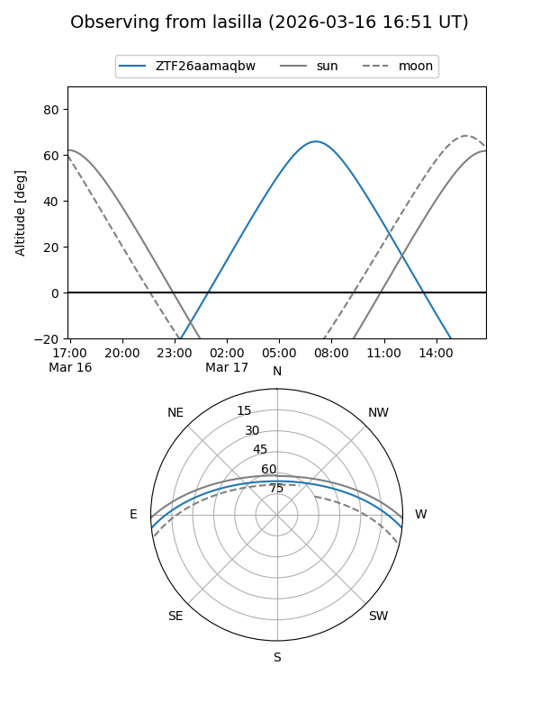
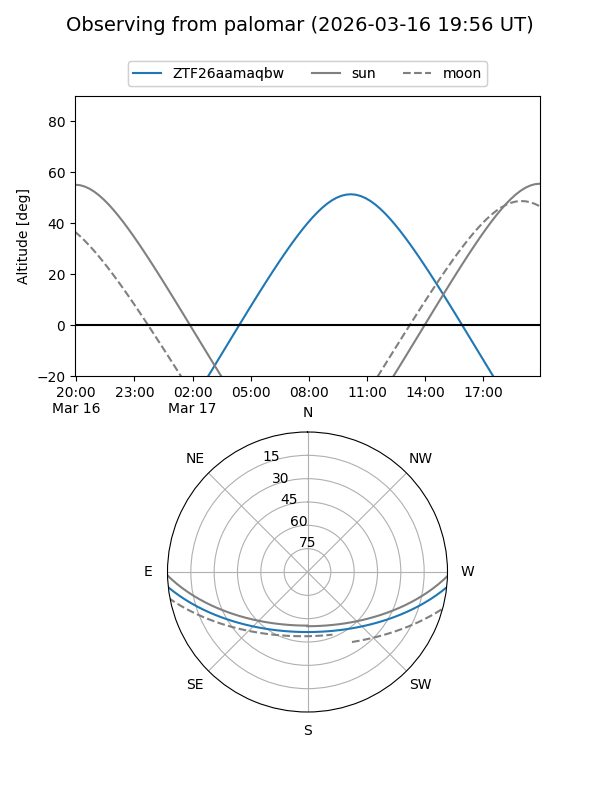

ZTF26aamaqbw
Target ZTF26aamaqbw at 2026-03-16 13:20
Aliases and brokers:
FINK: link
Lasair: link
ALeRCE: link
alt names
ZTF26aamaqbw (ztf,fink_ztf)
Coordinates:
equatorial (ra, dec) = 210.2490,-5.11824
equatorial (HMS+DMS) = 14:00:59.77,-05:07:05.67
galactic (l, b) = (333.0664,+53.63398)
Flags:
Photometry:
last ztfg=17.02
1 ztfg detections
Lightcurve
Visibility


Additional plots